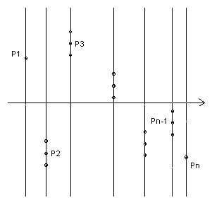

Given a set A of n points in the plane, no three collinear, show that we can find a set B of 2n - 5 points such that a point of B lies in the interior of every triangle whose vertices belong to A.
Solution

Take a suitable x-axis so that the points all have different x-coordinates. Label the points P1, P2, ... , Pn in order of increasing x-coordinates. For each point except P1 and Pn take the two points whose y-coordinate differs by d, where d is less than the smallest distance from one of the n points to the line joining another two. That gives a set of 2n-4 points.
Given any triangle PiPjPk, one of the three vertices is not 1 or n. Suppose it is Pi. If the line PjPk lies above Pi, then the triangle PiPjPk must contain the point whose y-coordinate is d greater than that of Pi. Similarly, if the line lies below, the triangle must contain the point with y-coordinate d less. So the set of 2n-4 points certainly has the required property. But the convex hull of the Pi must have at least one of the points P2, ... , Pn-1 as vertex. For that point one of the two flanking points lies outside the convex hull and so we can discard it, giving us a set of 2n-5 points.
We cannot do better than 2n-5. ABC has 1 triangle, so we need at least 1 point. Then if we add D inside ABC we get 3 disjoint triangles ABD, BCD, CAD and so we need at least 3 points. Then if we add E inside BCD, we get 5 disjoint triangles and need at least 5 points. And so on. Each point we add gives an extra 2 disjoint triangles and so increases the required number of points by 2.

© John Scholes
jscholes@kalva.demon.co.uk
1 Jan 2003
Last corrected/updated 1 Jan 03